My Travelling diary of Khaptad National Park
 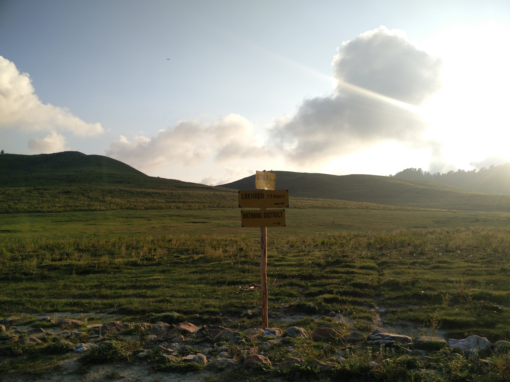
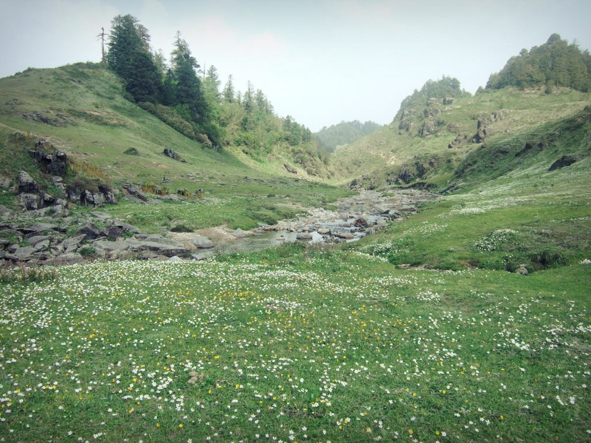
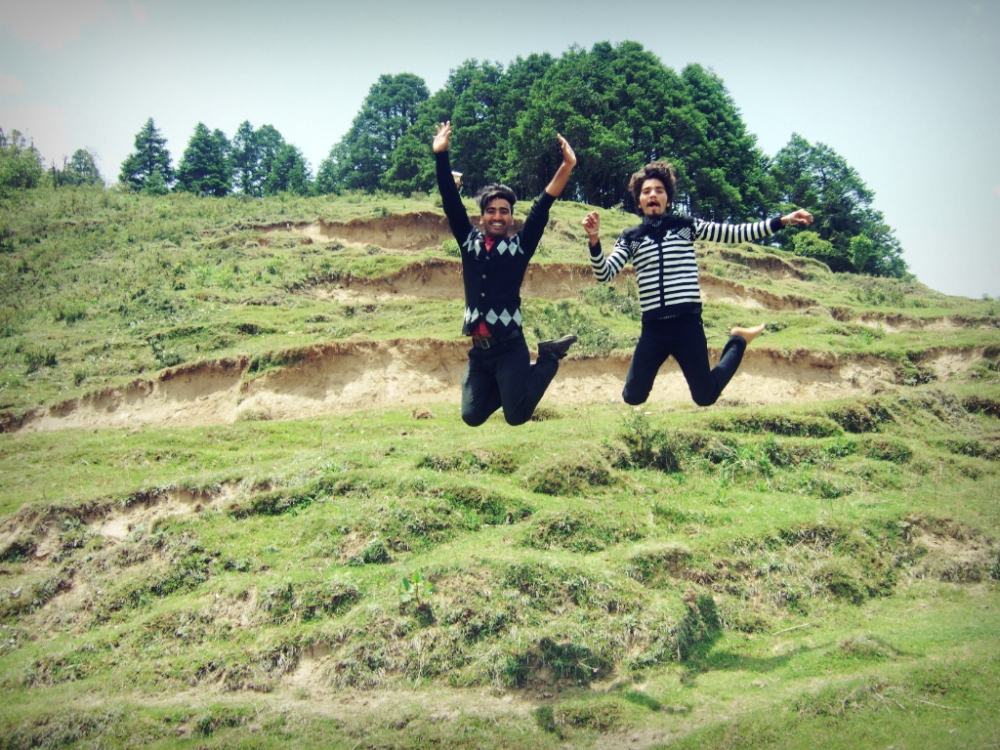
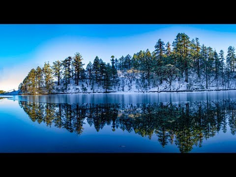
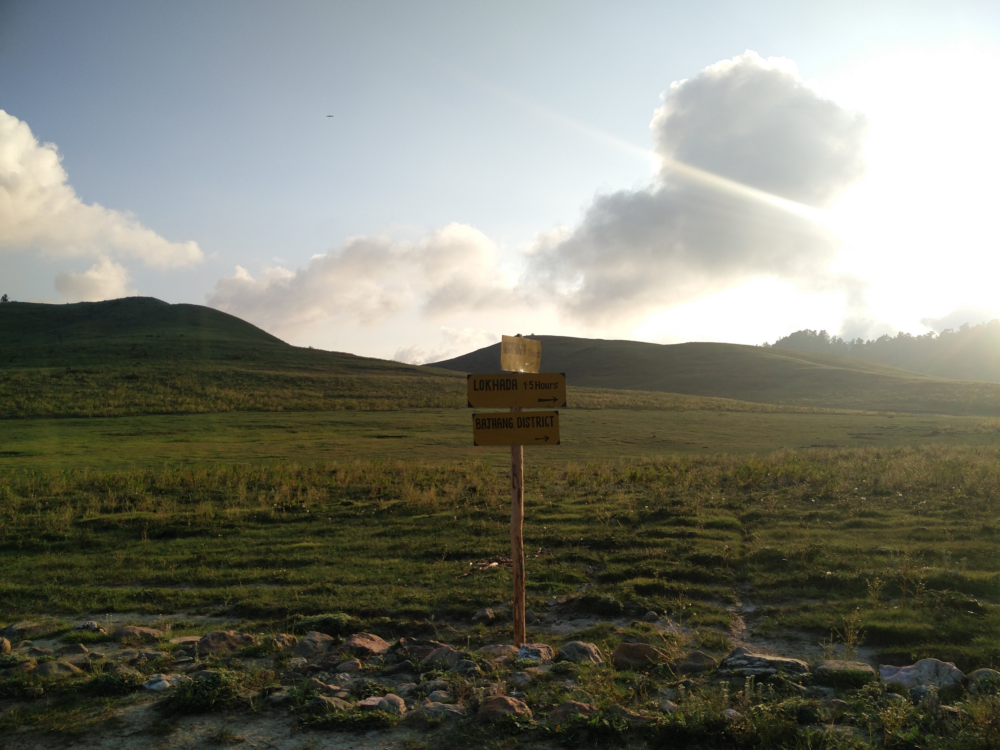
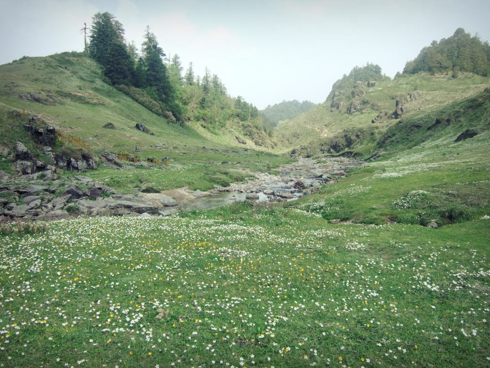
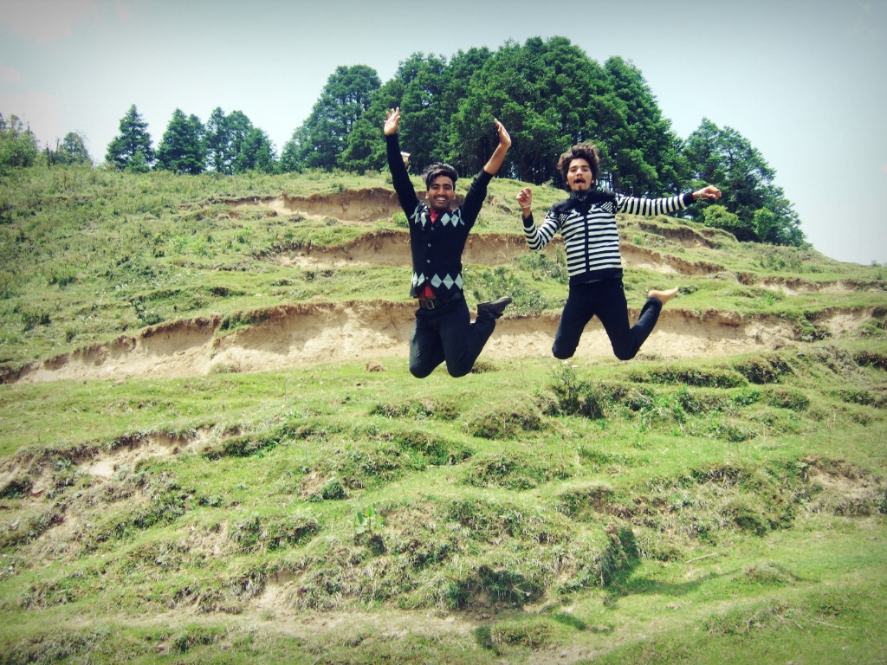
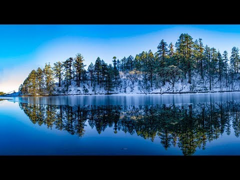

Hello Everyone.My self Khadka Ramesh I am Citizen of Nepal from top of the world (Everest) I compleated my bachelors from nepal in Bachelors in Business Studies which is affileted to Tribhuvan university and now I studying of kyoto College of Graduate Studies for informatics kyoto,Japan. I get the opportunity to study in japan and wants to starts my career in information technology(IT) There are four programs in The Kyoto College of Graduate Studies for Informatics.Web business technology programsm,Web system development program,Contents business program,Applied business informatics program.I am highly motivated and ambitious in pursuing my master's degree in Japan.By studying graduate program in japan,I hope to extend my vision and values which will also increase my Japanese language profiency.After the completion of my graduation, i will return back to Nepal and join with same business firm so that i can implement knowledge and techniques in business which i have learnt in KCGI.
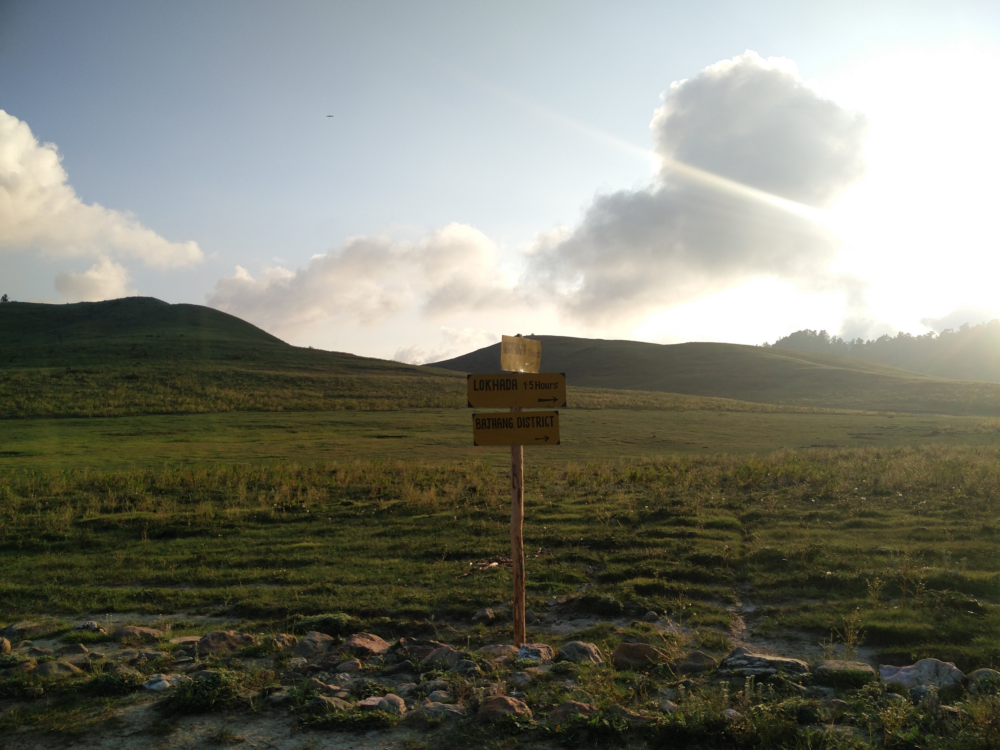
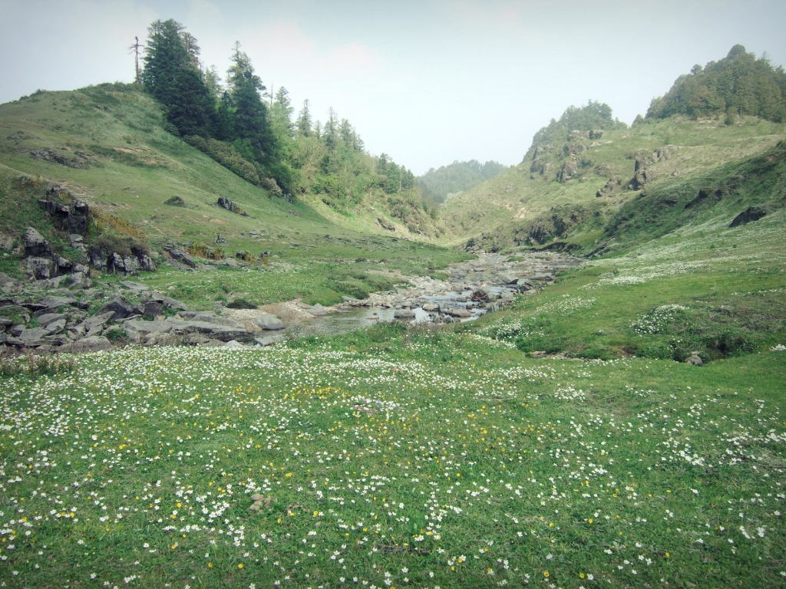
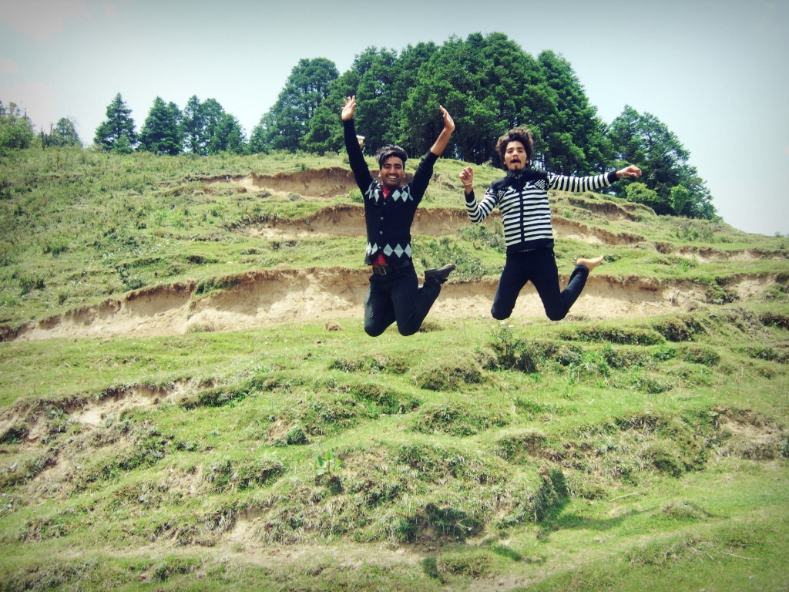
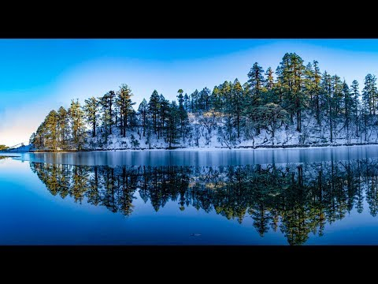
Khaptad National Park is a protected area in the Far-Western Region, Nepal that was established in 1984. Stretching over the four districts of Bajhang, Bajura, Achham and Doti it covers an area of 225 km2 (87 sq. mi) and ranges in elevation from 1,400 m (4,600 ft) to 3,300 m (10,800 ft). Khaptad National Park was established in 1984 on the advice of the region's holy man Khaptad Baba. The renowned Khaptad Baba Ashram, a religious site where Hindu pilgrims come to worship Shiva on the full moon of July–August each year, is located near the park headquarters. A buffer zone of 216 km2 (83 sq. mi) was declared in 2006. Khaptad Baba moved to the area in the 1940s to meditate and worship. He spent about 50 years as a hermit and became a renowned spiritual saint.
 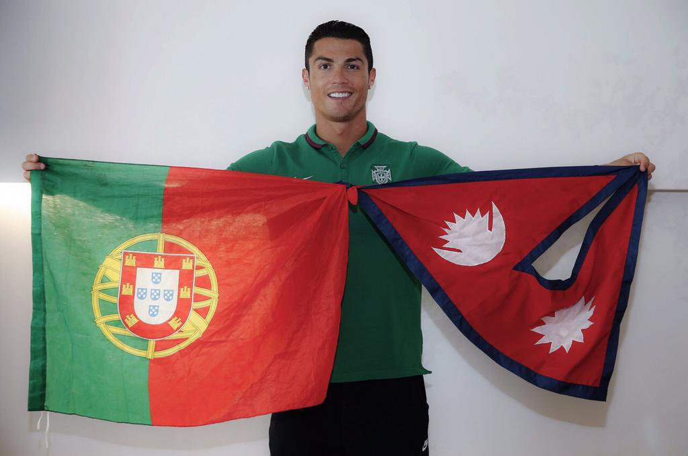
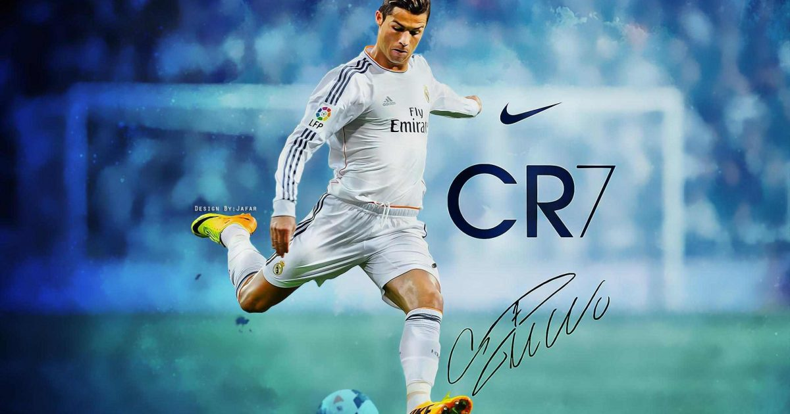
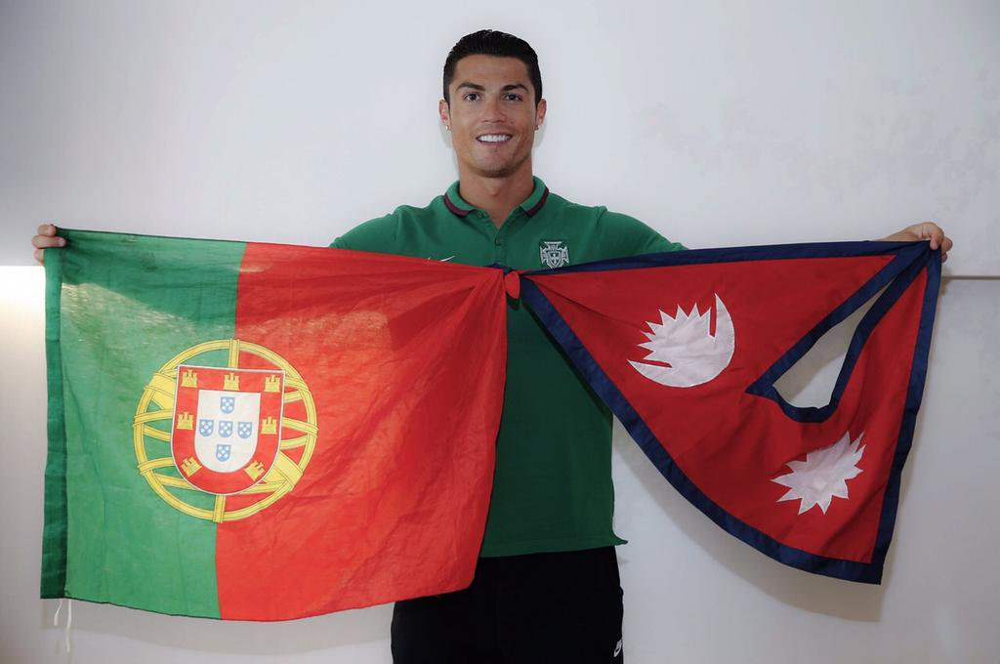
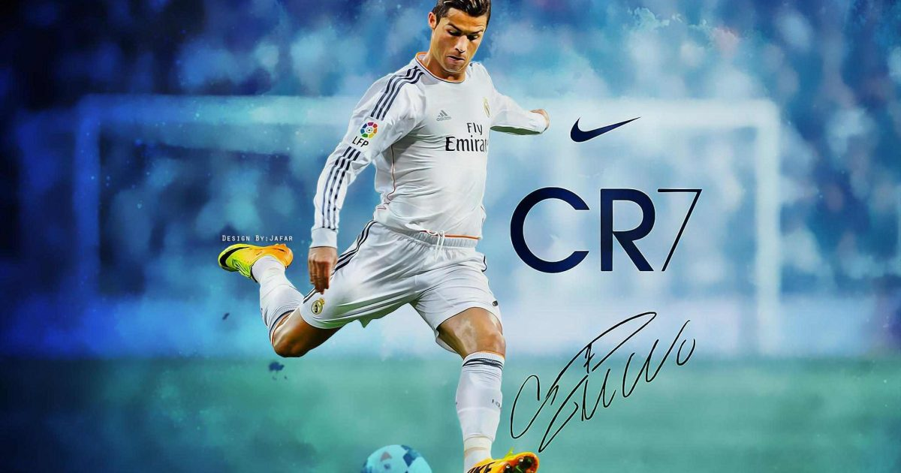
Real Madrid established itself as a major force in both Spanish and European football during the 1950s, winning five consecutive European Cups and reaching the final seven times. This success was replicated in the league, which the club won five times in the space of seven years. This team, which consisted of players such as Alfredo Di Stéfano, Ferenc Puskás, Francisco Gento, and Raymond Kopa, is considered by some in the sport to be the greatest team of all time.[9][10][11] In domestic football, the club has won 64 trophies; a record 33 La Liga titles, 19 Copa del Rey, 10 Supercopa de España, a Copa Eva Duarte, and a Copa de la Liga.[12] In European and worldwide competitions, the club has won a record 26 trophies; a record.